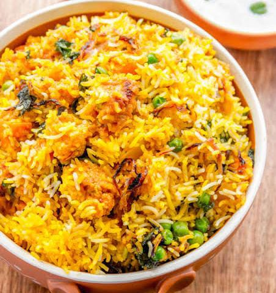
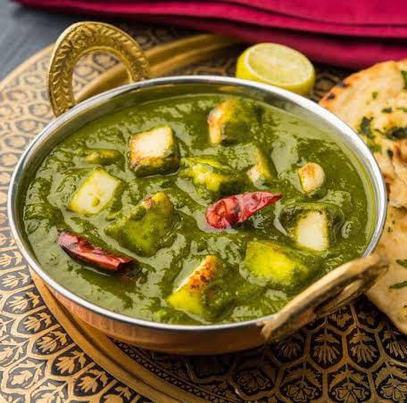
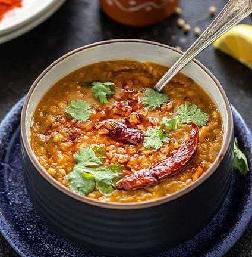

Butter Chicken
- 500g chicken, boneless
- 1 cup yogurt
- 2 tablespoons butter
- 1 onion, finely chopped
- 2 tomatoes, pureed
- 1 teaspoon ginger-garlic paste
- 1 teaspoon chili powder
- 1/2 teaspoon turmeric powder
- 1 teaspoon garam masala
- 1/4 cup cream
- Salt to taste
Instructions: Marinate chicken in yogurt, chili powder, turmeric, and salt. Heat butter, add onions,
ginger-garlic paste, and sauté. Add tomato puree, spices, and cook. Add marinated chicken, cook till done,
and add cream before serving.
Vegetable Biryani

- 1 cup basmati rice
- Assorted vegetables (carrots, peas, potatoes)
- 2 onions, thinly sliced
- 1/4 cup yogurt
- 1 teaspoon ginger-garlic paste
- 1 teaspoon biryani masala
- 1/2 teaspoon turmeric powder
- 1/2 teaspoon chili powder
- 1/4 cup chopped cilantro
- 1/4 cup fried onions for garnish
Instructions: Cook rice. Sauté onions, add ginger-garlic paste, and vegetables. Add spices, yogurt,
and cook. Layer rice and vegetable mix, garnish with fried onions and cilantro. Cover and cook on low
heat.
Palak Paneer

- 200g paneer (cottage cheese), cubed
- 2 cups spinach, blanched and pureed
- 1 onion, finely chopped
- 1 tomato, pureed
- 1 teaspoon ginger-garlic paste
- 1/2 teaspoon cumin powder
- 1/2 teaspoon garam masala
- 1/4 cup cream
- Salt to taste
Instructions: Sauté onions, add ginger-garlic paste, and tomato puree. Add spinach puree, spices, and cook.
Add paneer and cream, simmer until the gravy thickens. Serve hot.
Dal Tadka

- 1 cup yellow lentils (dal)
- 1 onion, finely chopped
- 2 tomatoes, chopped
- 1 teaspoon mustard seeds
- 1 teaspoon cumin seeds
- 1/2 teaspoon turmeric powder
- 1/2 teaspoon chili powder
- 2 cloves garlic, minced
- 2 tablespoons ghee (clarified butter)
- Salt to taste
Instructions: Cook lentils until soft. In a separate pan, heat ghee, add mustard seeds, cumin seeds, and
let them splutter. Add onions, garlic, and sauté. Add tomatoes, spices, and cook until oil separates. Add
cooked lentils and simmer. Serve hot.